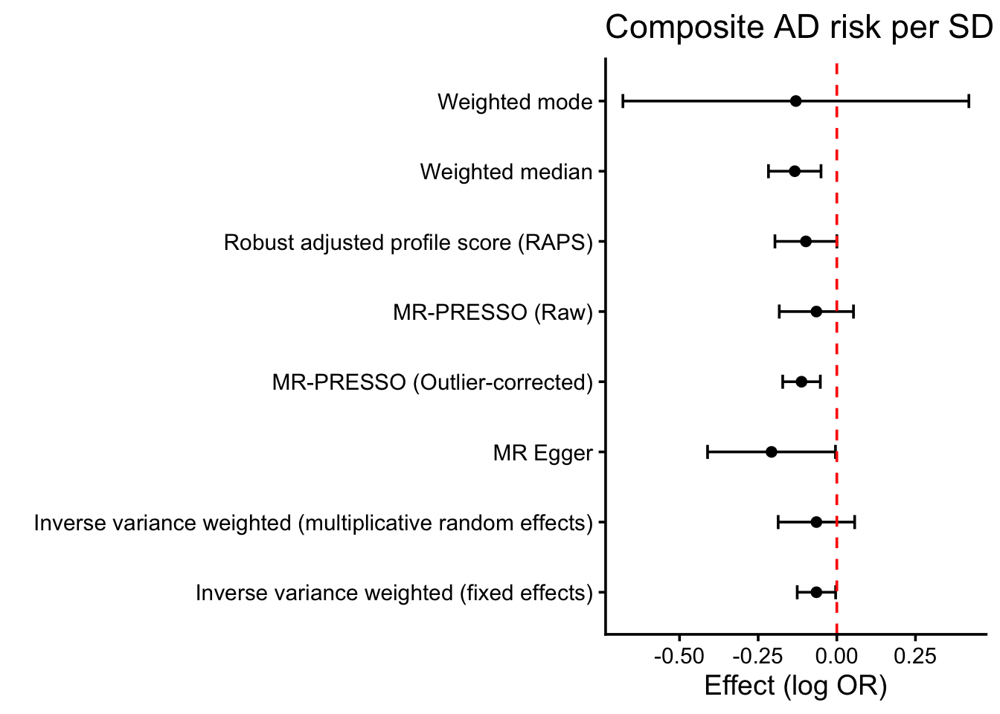

This is Layer 0 of the decomposition pipeline (see APPROACH.md). The goal here is not to confirm that smoking is protective for AD — it is to re-establish the composite smoking→AD signal cleanly so later layers can decompose it into a druggable nicotinic-acetylcholine-receptor (nAChR) axis vs. a non-druggable behavioral/combustion axis. Record sign, magnitude, heterogeneity, pleiotropy.
Data
Exposure: Cigarettes per day (GSCAN / Liu 2019, ieu-b-142); pre-clumped instrument set copied to data/. Outcome: Alzheimer’s disease, Bellenguez 2022 (ebi-a-GCST90027158).
Composite smoking→AD MR (the signal to be decomposed)
outcome
exposure
method
nsnp
b
se
pval
Alzheimer’s disease || id:ebi-a-GCST90027158
Cigarettes per day
Inverse variance weighted (multiplicative random effects)
22
-0.065
0.062
0.295858668
Alzheimer’s disease || id:ebi-a-GCST90027158
Cigarettes per day
Inverse variance weighted (fixed effects)
22
-0.065
0.031
0.037429345
Alzheimer’s disease || id:ebi-a-GCST90027158
Cigarettes per day
Robust adjusted profile score (RAPS)
22
-0.098
0.050
0.050083352
Alzheimer’s disease || id:ebi-a-GCST90027158
Cigarettes per day
MR Egger
22
-0.208
0.104
0.059053921
Alzheimer’s disease || id:ebi-a-GCST90027158
Cigarettes per day
Weighted median
22
-0.134
0.043
0.001698172
Alzheimer’s disease || id:ebi-a-GCST90027158
Cigarettes per day
Weighted mode
22
-0.130
0.281
0.647473029
Alzheimer’s disease || id:ebi-a-GCST90027158
Cigarettes per day
MR-PRESSO (Raw)
22
-0.065
0.060
0.292087897
Alzheimer’s disease || id:ebi-a-GCST90027158
Cigarettes per day
MR-PRESSO (Outlier-corrected)
22
-0.112
0.031
0.001488486
Show the code
ggplot(baseline.results, aes(y = method, x = b)) +geom_point() +geom_errorbar(aes(xmin = b -1.96* se, xmax = b +1.96* se), width =0.2) +geom_vline(xintercept =0, linetype ="dashed", color ="red") +theme_classic(base_size =14) +labs(title ="Composite AD risk per SD cigarettes/day", y ="", x ="Effect (log OR)")

Pleiotropy-outlier sensitivity (CLU / MINDY2)
Two SNPs — rs73229090 (nearest CLU, a canonical AD susceptibility gene) and rs632811 (MINDY2) — behave as uncorrelated horizontal pleiotropy: they are the SNPs MR-Clust isolates into a separate risk cluster (Layer 1), they are the most influential in leave-one-out, and they are what MR-PRESSO trims to reach the outlier-corrected estimate. Their effect looks direct-to-AD rather than via smoking. We report an explicit sensitivity estimate dropping them.
Effect of removing the CLU/MINDY2 pleiotropy outliers
set
method
nsnp
b
se
pval
all SNPs
Inverse variance weighted (multiplicative random effects)
22
-0.065
0.062
0.2958586681
all SNPs
Weighted median
22
-0.134
0.043
0.0016981717
outliers removed (CLU, MINDY2)
Inverse variance weighted (multiplicative random effects)
20
-0.113
0.032
0.0003447299
outliers removed (CLU, MINDY2)
Weighted median
20
-0.134
0.041
0.0011107705
Show the code
pr_ivw <- pruned.mr |>filter(method =="Inverse variance weighted (multiplicative random effects)")log_decision("L0b", "IVW after removing CLU/MINDY2 pleiotropy outliers",sprintf("b=%.3f, p=%.3g (n=%d)", pr_ivw$b, pr_ivw$pval, pr_ivw$nsnp),"protective estimate strengthens — outliers are AD-direct pleiotropy; adopt as canonical baseline")
Canonical baseline set
The CLU/MINDY2-pruned IVW (b = -0.113, p = 3.4^{-4}) is the more accurate baseline and is what Layers 1–5 build on. We persist the pruned, annotated, bin-assigned SNP table and a pruned instrument file for downstream use; the full 22-SNP set is retained only for the pleiotropy comparison above and the full-set MR-Clust discovery in Layer 1.
ivw <- baseline.results |>filter(method =="Inverse variance weighted (multiplicative random effects)")sign_txt <-ifelse(ivw$b <0, "protective (b<0)", "risk (b>0)")log_decision("L0", "Composite IVW sign/magnitude",sprintf("b=%.3f, p=%.3g", ivw$b, ivw$pval),sprintf("%s — proceed to decompose", sign_txt))cat(sprintf("Composite IVW: b = %.3f, OR = %.2f, p = %.3g (%s)\n", ivw$b, exp(ivw$b), ivw$pval, sign_txt))
Composite IVW: b = -0.065, OR = 0.94, p = 0.296 (protective (b<0))
The composite estimate is the baseline to be decomposed, not the result. Layer 1 asks whether the protection is mechanistically clustered at nAChR loci.